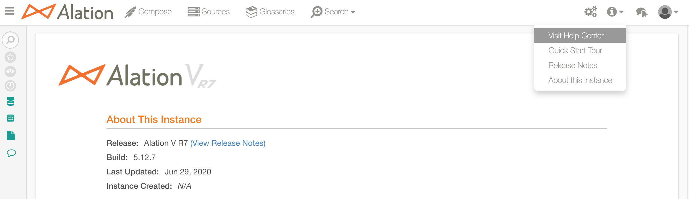

Release Notes V R6 (General Availability)¶
RELEASE 5.10.9¶
This patch delivers the Alation product changes required to complete the migration of the Alation technical support operations to the new platform: Service Cloud.
Alation Zendesk Help Center, which was previously used by the Alation technical support to manage support requests from users, is going to be turned off on July 2, 2020 11:59 pm PST. After this time, if users try to raise a ticket using the Zendesk widget or click on any of the Zendesk Help Center links in Alation, they will receive an error message until this patch is installed.
In this patch:
The Zendesk Support widget has been removed;
Built-in links to Zendesk Help Center have been removed;
The links to the Alation product documentation have been retargeted to the active product documentation site. Docs are available to all Alation users, and no additional configuration is required. See Access Alation Product Docs below.
Designated Service Cloud admin users have the ability to contact Alation Support directly from Alation if this is additionally configured on the Alation instance. Your organization will inform all Alation users who your designated admins are.
All users have the ability to access your internal help desk if this is additionally configured on the Alation instance.
If you are an Alation admin, then after this patch is applied, please make sure to perform the additional configuration to display links to the Service Cloud and your internal help desk:
Access Alation Product Docs¶
The Visit Help Center link that takes you to the Docs site is available to all users and has no dependency on their Alation user role. To open the Docs:
In the Alation Catalog, open the Information menu from the main toolbar and click the Visit Help Center link:
In Compose, click the Help menu on the top right and then click Visit Help Center.

Known Issue¶
Clicking on a result link on the Search results page on the documentation site is incorrectly redirected to the login page of the hosting platform instead of the appropriate documentation topic. The Engineering team is working to resolve this issue in the short run.
RELEASE 5.10.8¶
Fixes Referenced by Support Tickets¶
Support Ticket # |
Description |
|---|---|
15585 15974 16653 17585 |
Removed a warning for the Tableau Web Data Connector that the Web Data Connector library required an upgrade to the latest version. |
17112 |
Added support for null values in Azure Blob Storage metadata. Previously, null values passed in the metadata might cause errors during metadata extraction from ADLS Gen2 (supported with the Azure Blob Storage native connector). |
Miscellaneous Other Fixes¶
|
|
Known Issues¶
alation_action restart_alation command throws a warning while starting the supervisord component: Starting supervisord: /opt/alation/env/lib/python2.7/site-packages/supervisor/options.py:383: PkgResourcesDeprecationWarning: Parameters to load are deprecated. Call .resolve and .require separately. return pkg_resources.EntryPoint.parse(“x=”+spec).load(False). This warning has no impact on the functioning of the Alation application and should be disregarded.
RELEASE 5.10.7¶
Fixes Referenced by Support Tickets¶
Support Ticket # |
Description |
|---|---|
7941 |
For Sybase IQ data sources, the Column catalog page will now show the scale for the DECIMAL, NUMERIC, FLOAT, and DOUBLE data types. |
11171 13460 14730 |
For Tableau BI sources, several errors that would previously occur during extraction have been addressed. The errors include:
Overall stability of Tableau extraction has been improved. |
13004 14730 |
To ensure successful extraction from Tableau sources, extraction of the metadata objects where the parent name is missing will be skipped. This may lead to fewer extracted BI Data Source Column and BI Connection Column objects. |
13029 13436 |
Fixed an issue where Excel Live Reports did not work for DB2 sources. |
14863 15451 15734 |
Metadata Extraction would previously fail if null characters were encountered in the SQL definition of a view. Alation will now remove these null characters as part of the ingestion process, preventing the failure. |
Miscellaneous Other Fixes¶
|
|
|
|
|
RELEASE 5.10.6¶
Fixes Referenced by Support Tickets¶
Support Ticket # |
Description |
12338 |
Added ability to prevent creation of duplicate temp tables with the same name in lineage data by introducing the parameter alation.feature_flags.enable_ condensed_temp_object_resolution in alation_conf. This parameter enables an alternative QLI resolution method for temporary objects mentioned in multiple query sessions. Enable this parameter in alation_conf if this is an issue on your instance. Note that the duplicate temp objects will persist in existing lineage after this parameter has been enabled. However, newly created lineage data will not contain duplicate temp objects. |
13501 14463 |
Fixed an issue with report extraction from MicroStrategy where it was failing due to issues with prompt resolution and pre-emptive result fetch. Now, the prompts are resolved as expected and poll status is checked before fetching results. |
14620 |
SybaseIQ QLI was failing due to an invalid time format in the query fetch. The time periods between 12:00 AM and 01:00 AM UTC were returning a format which caused parsing to fail. This was fixed by properly formatting timestamps in QLI queries. |
RELEASE 5.10.5¶
Improvements¶
Snowflake Driver Update¶
Updated the built-in driver for Snowflake data sources to the new version (3.10.0) with enhanced support for parsing Compose queries and Snowflake query logs during QLI. The new driver version supports TLS 1.2 enabling connection to Snowflake after TLS 1.1 reaches EOL in the first half of 2020.
Support for Parsing CTE for Snowflake QLI¶
Added support for parsing CTE (Common Table Expressions) during QLI from Snowflake data sources and as the result, the Filters, Joins, and Lineage information will now reflect the QLI data resulting from parsing queries that contain CTE’s.
Known limitations:
Some queries with complex CTE syntax may still not be parsed correctly during QLI (for example, queries that contain both RECURSIVE and UNION keywords).
Snowflake QLI Improvements¶
Before this update, QLI for Snowflake data sources was performed using the QUERY_HISTORY table function of the INFORMATION_SCHEMA which is limited to extracting a maximum of 10,000 query logs for the last seven days and is further optimized to fetch 10,000 query logs for the last 24 hours. This improvement introduces a new way to perform QLI: it is now possible to configure QLI to run on the QUERY_HISTORY view of the ACCOUNT_USAGE schema which does not have this limitation. For more information, see the Snowflake section in Adding Data Sources.
Improvement for Exporting of Compose Query Results Into MS Excel¶
Support Ticket # |
Description |
7933 |
This improvement allows for importing Compose query result sets into MS Excel while keeping the correct values for the text-like data types when values contain leading zeros. You can now enable pre-formatting for these data types, which consists in wrapping the values in additional quote marks in the export files formed by Alation. This helps avoid having to do additional formatting of the data before importing the Compose query result sets into MS Excel. For more information, see Wrap Text Fields in Quotes for Exports and Downloads. |
Fixes Referenced by Support Tickets¶
Support Ticket # |
Description |
11545 |
Fixed an MDE issue with AWS Glue where table and column objects would not show up in the Alation UI after MDE was performed. Mandatory field table type for AWS Glue table has been relaxed and now defaults to Table type. The MDE framework is made fault tolerant in order to continue with table extraction in case there are intermittent failures which are logged as warnings in taskserver.log. |
13371 |
Previously, on Alation instances using LDAP authentication, users with first or last names longer than 30 characters were unable to log in to Alation. This issue has been fixed, and now all users can log in with their LDAP credentials, as expected. |
13983 |
Fixed an issue with Hive data sources where the COMMENT key in the ALTER VIEW query statements run in Compose was not applied by Alation when all uppercase characters were used. As a result, the view comment was not updated on the source and the Source Comment field was not updated in the Alation Catalog after performing MDE. After this fix, all uppercase characters in the COMMENT key in the ALTER VIEW statements are recognized and accepted by Alation. However, note that character case must be used consistently. The “comment”/”COMMENT” key must use the same type of case as was used when the view was created. “comment” or “COMMENT” cannot be used interchangeably. |
14543 14762 14909 |
In some rare cases custom field filters on the Advanced Search page would disappear after the update to V R6. This fix prevents the issue from happening after all future updates to V R6 (5.10.5) from prior versions. However, it does not fix the problem for the V R6 instances below V R6 5.10.5 which have already encountered it: on V R6 instances below release 5.10.5 this issue can be handled by the Alation Support. |
RELEASE 5.10.4¶
Fixes Referenced by Support Tickets¶
Support Ticket # |
Description |
13047 |
For heavy QLI users, fixed a performance issue where Lineage resolution would lag behind the other QLI jobs. This would cause archiving to be ineffective, as Alation needed to process the old records. Now, Lineage resolution runs significantly faster. |
13285 |
Metadata extraction process was adding some inaccurate data to the table metadatachangelog in the internal Alation server database: this data incorrectly indicated that all tables and columns were deleted for schemas with no changes; however, in the Alation catalog these tables and columns were still displayed as expected. Fixed this issue by adding a check to ignore all schemas with no changes from the metadatachangelog update query. |
14095 |
Fixed an issue with data dictionary download where users who requested a download in Alation would never receive the file in their email. This was traced down to a memory usage problem where active download processes would not release memory after they completed, and as a result, would stack up and cause all queued download processes to shut down. Download processes are now destroyed after 1 download is completed instead of 100 downloads. This frees up memory after each download is completed, and the queued download tasks can successfully run. |
Miscellaneous Other Fixes¶
|
RELEASE 5.10.3¶
Includes Fixes:¶
|
|
RELEASE 5.10.2¶
Improvements¶
Agile Stewardship features are now always enabled by default, including My Stewardship Dashboard, Tasks/Inbox, Agile Approval, Curation Progress, Data Objects Without Stewards, and Catalog Activity.
The analytical Stewardship reports are under the Curate menu on the main toolbar. Users still need to select the Data Steward/Governance Officer hat to be able to view the Curate menu.
Fixes Referenced by Support Tickets¶
Support Ticket # |
Description |
6322 |
Fixed an issue with executing queries with the result column of type Decimal on a custom data source type for a specific customer. Previously, such queries would fail with an error in Compose. Now, this specific data source will be handled like a Presto data source when processing Decimal type result columns. |
7996 10338 13010 13344 |
Added SSRS reporting SDK jar files to support SSRS versions 2008, 2012, 2014, and 2017. |
11171 12500 13148 13149 |
Fixed a GA known issue with Tableau metadata extraction with permission mirroring enabled where it would stall indefinitely or fail with errors in logs. To address the problem, we changed the approach to permission validation and saving permission information in Alation, allowing it to process larger volumes of data and increasing the processing speed. |
11769 |
For heavy QLI users, fixed a performance issue with QLI where LineageResolution was slow to process rows. This would lead to a bloated database and large backup sizes due to QLI archiving not packaging those rows. |
13296 14127 |
Fixed an issue where Curation Status would suddenly drop to 0% (or change to another percentage), without users changing any filters on the Stewardship Dashboard. |
13677 |
Added support for a custom Presto driver requested by a specific customer. |
13964 |
Improved performance of bulk-delete operation for BI sources, which improves the ingestion of a large volume of permission information. Improved user filtering to correctly record the number of created and updated BI users. |
Miscellaneous Other Fixes¶
|
|
Known Issues¶
- On completely new installations, the initial background job that should calculate the starting values for My Stewardship reports is not triggered automatically. For now, it needs to be initiated manually via the Django shell. The existing instances where My Stewardship Dashboard was already enabled before updating to this patch release should not be affected. However, if you notice that your Stewardship Dashboard contains no data, contact your Alation admin with Alation shell access to manually initiate this job. To trigger it manually, the admin must perform the following action:
sudo service alation shell alation_django_shell from stewardship.tasks.ingestion_job import CurationProgressIngestorJob CurationProgressIngestorJob.queue_job() exit() exit
(This is fixed in release 5.10.3).
Filtering the Curation Progress report by the Steward field may sometimes be incorrect when the selected filter value is a Group. This only happens for some groups due to a mismatch between the ID value expected by the server and the ID passed by the API. The fix is planned for one of the coming patch releases.
RELEASE 5.10.1 - General Availability¶
New Features¶
Certified Support for MicroStrategy 11.1¶
Added support for MicroStrategy Enterprise version 11.1 (2019) as a BI source.
Certified Support for Tableau 2019.2¶
Added support for Tableau 2019.2 as a BI source.
Google Big Query Enhancements¶
Implemented a new driver for Google BigQuery (developed by Simba®️). Starting with this release:
Service account and user account or just a user account can be used for authentication to connect to the Google BigQuery data source;
Users can run concurrent queries in Compose;
It is possible to extract datasets from multiple projects;
Both Standard SQL and Legacy SQL are supported;
Table-level lineage is supported.
Refer to Google Big Query V R6 section of the Adding Data Sources.
Schema Versioning for NoSQL Virtual Data Sources¶
Ability to enable schema versioning for virtual data sources of Generic NoSQL type. The first set of metadata you initially load into your data source will become Version 1, and all subsequent metadata changes will be documented in the schema version history accessible from the dedicated catalog page of this schema.
Support of Avro Schemas for NoSQL Virtual Data Sources¶
In this release, we have enhanced the Generic NoSQL API that loads metadata into Virtual Data Sources (VDS) of Generic NoSQL type to support schemas in the Avro format. Alation supports all Avro data types for this type of data source: Avro Data Types Support.
Column-Based Lineage and Dataflow Objects¶
In prior releases, lineage in Alation has been limited to tables only. Starting with V R6, Alation supports column-level lineage enabling you to perform data flow analysis at the deeper column level. We have also added ability to capture data flow processes, such as ETL, with the help of a new type of Alation object: Dataflow object. Generic Dataflow objects can represent stored procedures, ETL processes or other data preparation tools. Dataflow objects and column-level lineage data must be loaded via the dedicated API. In Alation, you will be able to:
View column-level lineage on the Lineage diagram of a data source;
View Dataflow objects in the lineage diagram;
View Dataflow object dedicated catalog page that details inputs and outputs providing an insight to data changes.
The Lineage diagram has been improved to feature better on-click responsiveness of the lineage elements and a more efficient zooming. For details, refer to Lineage v2.
Advanced Search Enhancements¶
Ability to export the result set of Advanced Search
Ability to apply multiple custom field filters
Ability to display non-browsable objects
For details, refer to Using Advanced Search.
Customizable Table and Column Pages¶
This feature adds greater flexibility in ordering fields / components within the Column and Table catalog pages. Enhancements made to the Custom Template editing for Table and Column Templates: adds the ability to customize where custom fields and components appear on a table or column page. Also adds the ability to group fields under a specific section and place fields anywhere on the page for Table and Column pages. For details, refer to Editing Object Template Layout.
Collaborative Query Writing¶
Compose users will now have a better experience writing queries with more improvements to query collaboration. Query owners will be able to give access to their queries to other users as Authors. Users will not be able to edit somebody else’s query unless given access. The users who have been invited to collaborate, will receive email notifications with the link to the shared query. Collaborators will also see the queries that they can edit in the Query Browser under Saved Queries and Shared Queries. Viewers and query authors can see who is currently collaborating on the query by clicking the Who can access link in the new Share dialog. Such filters as Scheduled and Frequency have been added to Advanced Search > Queries.
There are accompanying changes to scheduled queries : now, a query must be published before it can be scheduled. During update to V R6, any existing unpublished scheduled queries will be automatically published to preserve their execution schedule.
Catalog Activity Report Reflects Changes Via Catalog Sets¶
Catalog Activity report now includes changes shared through catalog sets. Data Stewards will see changes to:
Data objects updated via Catalog Sets
Data objects assigned to via a Catalog Set
For details, refer to Working with Catalog Activity Report.
Asynchronous Data Dictionary Download¶
Users downloading a data dictionary will now be emailed a link to download the file instead of streaming it immediately in Alation: Download a Data Dictionary.
Data Source Filter for Conditional Catalog Sets¶
Added ability to filter the catalog set members by data sources for Conditional Catalog Sets. Users can now choose to include/exclude data objects from specific data sources when adding members to a conditional set.
Integrated Business Glossary and Lexicon¶
Lexicon and Business Glossary are now integrated to provide a way to link relevant data objects to articles in bulk. The Lexicon job will run weekly to analyze the names of such catalog objects as Schemas, Tables, and Columns and put together a list of Suggested Terms. Suggested Terms are candidate glossary terms which Lexicon produces after “scanning” the names of the schemas, tables, and columns, expanding the abbreviations, and mapping them onto the titles or auto-titles of these objects. Suggested Terms and the relevant data objects for these terms can be accessed by users with the Catalog or Server Admin roles on the Suggested Terms tab of the Glossaries page. Admin users can add a Suggested Term to an existing article or as a new article to a glossary. The links between this term and the relevant data objects as discovered by Lexicon will be added to a dedicated section Related Data Objects. Users with any role can view the list of Related Data Objects on the page of the article as well as a mention of this article under the Relevant Articles field on the pages of the linked data objects.
Alation Analytics ETL Performance Improvements¶
Introduced incremental loading for the logical metadata ETL job as the initial step in improving performance of the Alation Analytics ETL process. Previously, this ETL job performed a full replacement of the data and could take an extremely long time, especially on sizable datasets. Customers who have database and file system sources in their Alation catalog but do not have any BI sources may notice that the Alation Analytics ETL is completed faster than before. However, if your catalog contains BI sources, you may only notice a slight to no improvement. This ETL change is the first change in a series of improvements Alation is planning for Alation Analytics ETL in the coming releases.
Encryption Keys Management¶
Implemented an additional master encryption key that is used to encrypt the data and credentials encryption keys before they are stored. Audit logs are also available for key transactions. The encryption happens automatically in all new installations of V R6 and when Alation is updated to V R6 from previous releases. This functionality does not affect the Alation UI, and no action is required on the users’ part. This feature has been added to help organizations comply with data protection regulations without the need for any 3rd-party software.
PostgreSQL Upgrade to 9.6¶
Starting with this release, new Alation installations use PostgreSQL version 9.6. Existing customers can choose to upgrade their PostgreSQL instances from 9.3 to 9.6 after they update Alation to V R6 (5.10.x): Upgrade Internal PostgreSQL Instances.
Password for Internal PostgreSQL Databases¶
It is now possible to set a password for the internal Alation server PostgreSQL database and the Alation Analytics PostgreSQL database: Set Password for PostgreSQL Instance.
Improvements¶
Catalog¶
The Info icon that used to show up next to fields and parameters in the catalog on hover-over only will now always be visible for a better discoverability of Alation.
The deprecated Object Equivalence tab was still visible in Alation under the Server Admin Settings. Now, this tab has been removed and users can no longer navigate to this page.
Previously, untitled articles did not have any identification, which made it difficult to differentiate between them and to search and find specific ones. Now, untitled articles will have an ID number appended to the title. For example: Untitled Article [id], which helps the differentiation, searching and finding of the required article object.
Catalog and Server Admins now have the ability to edit the names of Tag objects. Previously, the Tag names were non-editable.
Previously, a user session was not invalidated when logged-in users changed their password during this session. Now, the logged-in user will be automatically logged out when their password is changed.
Non-browsable objects will no longer appear in quick search. Starting with V R6, users should use Advanced Search in order to surface such objects.
Increased the limit of the custom field tooltip text from 100 to 250 characters to allow for more meaningful descriptions.
The Inbox icon in the top navigation bar now shows a blue dot when you have unread messages in the Inbox (In-app notifications have to be enabled).
Before Alation V R6, the deprecated Object Equivalence tab was still visible in Alation under the Server Admin Settings. Now, this tab has been removed and users can no longer navigate to this page.
Platform¶
Previously, a built-in user postgres was used for connections to the rosemeta database. Starting with V R6 (5.10.x), the user alation will be used for this purpose.
Logs generated by the Alation web application are now written as structured JSON logs. This includes all logs named in the format alation-{log level}.log.
Deprecated the capability to set an additional password for the login/sign-up page. Previously, there was ability to set several parameters in server configuration for the users to be prompted to provide an additional global password before navigating to Alation. This feature has been removed. If you ever set these parameters on your instance, they will no longer have any effect.
Optimized the task distribution for the calculations for My Stewardship Dashboard by adding a new task queue capable of processing 10,000 tasks before restarting and by re-organizing queue workers.
The uWSGI logs now report the timezone in the timestamp.
APIs¶
Previously, the Upload Logical Metadata API did not support the update of catalog fields for Virtual Data Sources of Generic NoSQL type. The DocStore object types - docstore_folder, docstore_collection and doc_schema are now supported by this API and can be updated using it: Custom Field Formatting.
The Upload Logical Metadata API now contains information on the Data Parameter format for the object types docstore_folder, docstore_collection, and doc_schema. For more information on the parameter formats, see Custom Field Formatting on Customer Portal.
Data Sources¶
We have enabled SSL support for connection to Tableau’s internal repository. You can specify the connection type by adding ?ssl=true or ?ssl=false parameters to the URI under the PostgreSQL Connection section on the Tableau source Settings page.
Custom DB framework has been enhanced to support extraction from databases which do not contain schemas in their data model. This improvement enables MDE, Compose and Profiling for Denodo data sources via Custom DB framework.
Additional Bug Fixes in GA¶
For full list for release V R6 GA, also see Fixes Referenced by Support Tickets and Miscellaneous Other Fixes announced in 5.10.0 (LA).
Support Ticket # |
Description |
12643 |
For customers with large amounts of custom field back-references to Groups, some customers encountered issues where the Customize page and Group List page would not load. This change addresses performance issues on these pages and allows them to load successfully. |
Other Fixes:¶
|
|
|
|
|
|
|
Known Issues in GA¶
Users may get an error when trying to update the Description and custom fields on catalog pages of MicroStrategy and Cognos BI servers and their child objects.
Release 5.10.1 has an issue with metadata extraction from Tableau sources with permission mirroring enabled when it is taking too long to complete and when permissions may be applied inaccurately to objects in Alation. With the “Disable Hard Sync” setting turned on, it may complete in a shorter time. The fix for the issue is planned for the next patch release. (This is fixed in release 5.10.2).
The weekly automatic curation progress resync job and Lexicon job do not run. Curation Progress report is not affected as this is a back-up job, and there are other background update jobs that keep the report data up-to-date. However, the Lexicon job has to be triggered manually on demand for now for the suggested terms and auto-titles to be updated. (This is fixed in release 5.10.2).
For other known issues that still exist, see Known Issues identified for 5.10.0.
RELEASE 5.10.0 - Limited Availability¶
For feature list, see New Features in Release 5.10.1 section.
Fixes Referenced by Support Tickets¶
Note that this release already includes all the fixes announced in patches to V R5: 5.9.3 - 5.9.8
Support Ticket # |
Description |
7701 12599 |
Previously, if the object title was too long, the Edit button would disappear from the catalog page. This issue is fixed. Now, overflowing titles are truncated leaving space for the Edit button. |
9579 |
When Spark SQL logs were used for Query Log Ingestion (QLI) for Hive 2, Alation was unable to extract the user name in a few specific cases, causing the QLI to fail. This issue has now been fixed. |
9222 |
Previously, lineage was not created for CREATE or REPLACE VIEW queries with and without schema binding for the Amazon Redshift data source. Now, lineage is visible for CREATE or REPLACE VIEW with and without schema binding for Amazon Redshift. |
10229 10958 10983 11797 12051 12155 |
Previously, if a catalog set member contained an undefined object type, users were unable to fully rebuild their search index. To fix this problem, Alation now adds safe type checking so that the rebuilding of the search index can succeed. |
10510 13367 |
Fixed an issue with QLI over WebHDFS for Hive data sources where in some cases, it would fail with the “ValueError: A query log was missing sessionId”. |
10599 |
Previously, using the data dictionary upload feature could degrade the overall responsiveness of the Alation application. This has now been fixed and using data dictionary upload should not impact the health of Alation. |
10885 13260 |
Previously, the Stewardship Dashboard page would fail to load if the conversations in My Inbox Summary referred to themselves or any other conversation objects. Now, the Stewardship Dashboard page loads successfully and the Inbox page also opens successfully from the Stewardship Dashboard page. |
10927 |
Fixed a pagination issue on the Sources page. Pagination skipped some of the pages and as a result, prevented users from viewing all their data sources. After this fix, pagination works as expected. |
11087 12061 12493 12764 13043 13230 13257 13286 |
Previously in Firefox and Internet Explorer (IE), when permissions for an article were restricted, the Title field would always be shown as “…”, which made it impossible to view or edit it. Now the Title field is truncated correctly in all three supported browsers Chrome, Firefox, and IE. |
11217 |
The export of query results to CSV now consistently flushes data chunks to the network on smaller data boundaries. This change ensures that the “Run and Export” functionality in Compose streams the full query result to the user’s machine. |
11270 |
Previously, in Advanced Search, if a user tried to set a filter by schema selecting a schema with spaces in the name, such a filter value would not apply to the result set. After the fix, filtering on the schema name with spaces works as expected. |
11312 |
Clicking the attachment of a .docx file in Firefox automatically downloads the attachment unless the browser is set up to open attachments. |
11560 |
Previously, object set fields on the sidebar of an article page appeared as “Untitled Article” even if the values were objects with titles. Now, Alation renders the correct object titles on the sidebar of the article page. |
11628 13304 |
Previously, the MicroStrategy web server external URL in Alation was not formed correctly based on the parameters provided in the MicroStrategy source settings. As a result, the link from Alation to MicroStrategy was broken. This issue has now been fixed. |
11752 |
Previously, on the Stewardship Dashboard, there was a bug where the data objects without stewards were shown as objects with stewards. This issue has been fixed: after updating to V R6, Stewardship Dashboard will display the data correctly. |
11797 |
Search indexing has been improved and has become more resistant to failures. Now, it will continue indexing more batches of objects even if a random batch crashed. |
11874 12721 |
Admins reported receiving a blank email alert that was sent even though there were no issues with the Alation server health. This problem has been fixed. Blank emails will no longer be sent out. |
12001 |
Previously, when a Teradata data source was added but the user deleted it later, the Governance Tracking Dashboard still included it into the data for “All data sources” even when this specific deleted data source was not displayed in the Data Sources filter. This issue has now been resolved. |
12330 |
Fixed an issue with the public API for Articles, where the GET all articles request would throw a 500 Server error when the request parameters included the custom_fields value in the values parameter. |
12349 |
Previously, scheduled queries which failed with the “could not connect to the database” error did not trigger any notification email: they failed silently. This happened when the connector no longer had a ready database after the connection had first been established and the query had been started but then the connection was lost. After the fix, admin users will receive email notifications when scheduled queries fail with this type of error. |
12384 13477 |
Previously, when a user with the Catalog Admin role tried to see the preview of the changes after editing the catalog set rules - by clicking the Preview button in the catalog set editor, they would get a Permission Denied error because previews were only accessible to users with the Server Admin role. After the fix, Catalog Admins are able to preview the changes after modifying the catalog set rules. This ability is now part of the Catalog Admin role. |
12487 |
Fixed an issue where Alation could potentially block its own usage due to the installer setting incorrect permissions on the /var/lib/nginx directory. Users would receive “query aborted” errors when running queries in Compose or could encounter other usage problems where it would be impossible to perform actions. After the fix, no such situations should potentially exist. |
12841 |
Fixed the ability to download encrypted logs from the Admin Settings > Logging tab that can be sent to Alation Support. Since early August 2019, this functionality has not been working in versions that do not include this fix. |
13295 |
Fixed rendering issues for key names for struct type data in Hive when using the new struct data type in the Alation Catalog. |
Miscellaneous Other Fixes¶
Note that this release also includes all the fixes announced earlier in V R5 patch releases up to 5.9.8.
|
|
|
|
|
|
|
|
|
|
|
|
|
|
|
|
|
|
|
|
|
|
|
|
|
|
|
|
Known Issues Identified in LA¶
You may encounter several issues with the Google BigQuery data sources:
data uploader and data dictionary upload features are not available for data sources of this type
column profile for data type geography will fail with an error
ALTER TABLE query will result in a null pointer exception in Compose
MDE will fail for a dataset with a long name of 1024 characters
Struct column type will appear as a table in the catalog
There are currently several issues with Denodo data sources (added using Custom DB framework):
Data Profiling appears to be working but may produce exceptions in the taskserver.log
A table or view created using Compose will only be visible in the catalog after performing MDE.
Stored Procedures “procedureecho” are not extracted and do not appear in Alation under Code > Functions.
For functions and procedures which do not have any schema name associated with them, Alation creates an internal “global” schema that will be visible in the catalog. There will also be exceptions in the taskserver.log
When running multiple statements in Compose, then in a situation when the data source is not responding, the correct error message will only appear for the first statement. The other statement will throw a “query aborted” message without giving any context for the error.
When running the Profiling for the Denodo data source, then in a situation when the data source is not responding, there will be no error messages in the catalog UI, and the message in taskserver.log will just say that the data source is suspended without providing any more context for the error.
Selective extraction of schemas is not available for this data source
Data dictionary upload is not available for this data source
During MDE, indexes are not extracted from this data source
Data uploader is not working with this data source
Alation may fail to send an email notification to the user about a new task assignment via an open Conversation.
A few things not working as expected in Compose:
When the Description field of a query is updated in Compose and an Alation object is @-mentioned in this Description field, then the reference have the mentioned object type as “undefined” in the Catalog on the catalog page of the query. This can be seen in the code view mode of the Description field in the Catalog.
PUT lock API is triggered again after the first key press which follows Edit Query or Takeover & Edit button click.
There may be performance issues with downloading the content of the user’s Inbox where it may take a long time to load or even time out.
When authenticated using NTLM, profiling for a SQLServer data source returns no data for the image data type.
Data Output table on the Dataflow object page will display an empty row for a temporary column if a temporary column is present in the column-level lineage data.
The existing upstream and downstream lineage flows are shown on the lineage diagram only if they are relevant to the data object selected in the diagram. Note that the selected object is always indicated with the orange color. When a target data object on a given diagram was created using several source data objects, then all of these source data objects will be present in the diagram. However, not all of the lineage data existing for these source objects may be relevant to the currently selected object. Such lineage flows - existing in data, but unrelated to the currently selected object - will not be displayed.
Updating a complex data type via the noSQL API may not work correctly when a complex data type is changed to a primitive data type (for example, when an “Array” is changed to “Integer”).
Updating the metadata of a virtual data source of the Generic NoSQL type with the “remove not seen” parameter currently does not remove the fields of struct type.
Connection to SQLServer in Compose may fail after running a query which results in an unsupported data type error.
Profiling may fail for Hive tables containing the union data type.
For Greenplum data sources, when a user runs a query with filters and JOINs in Compose, the count of filters and JOINs is not updated on the Filter and Joins tab in the catalog even though the query history will contains this query.
MDE may fail for HDInsight when extracting bucketed tables and the default schema.
Currently when leaving the “Extract all projects except” default option for selective extraction from MicroStrategy, users need to make sure they select the specific projects to exclude and add them to the list of exceptions. If the projects to be excluded have not been added, Alation understands this as “exclude all projects”, and the attempt at MDE will fail with a null pointer error.
Advanced search export is not available when the Generic BI model flags are enabled and search results include BI objects.
There is an issue with the ubervisor.err log file when it is not rotating and can grow to a very large size.
It is currently not possible to add a new Databricks data source as the Add Data Source wizard fails with an error for this database type.
For the Presto data source type, when you try to open the data source catalog page clicking on the Open Page button on the upper left of the page at Sources Manage Settings / <Data Source Name> on the Settings page, the catalog page will not open due to a JS error on the page. For now, you can open the catalog page of Presto sources from the Sources page (accessible from the main toolbar) or by finding it in search and clicking its title.